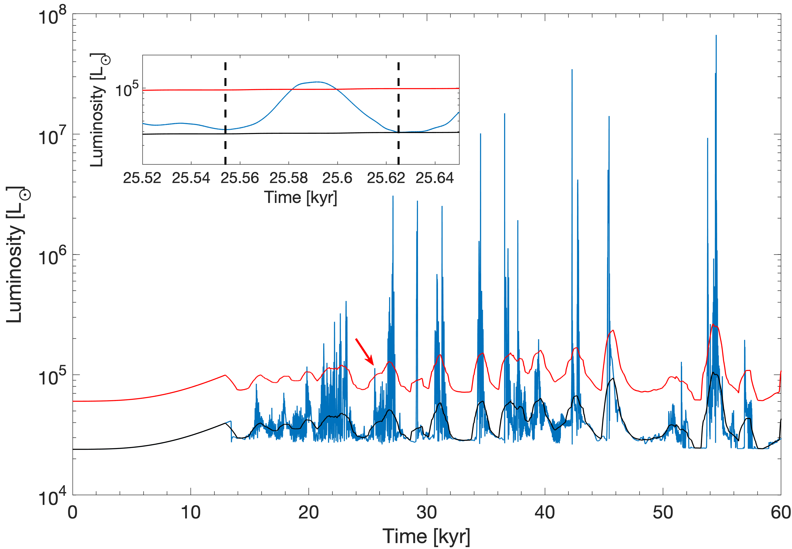
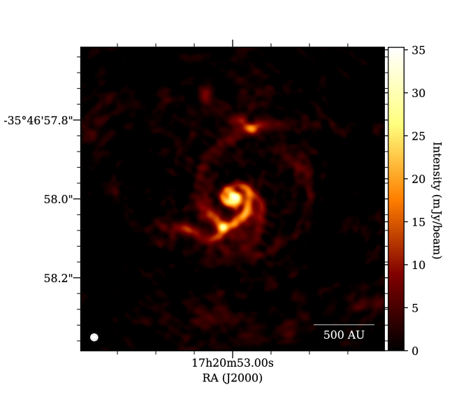

|
The backreaction of stellar wobbling on accretion discs of massive protostars
Meyer D. M.-A., Vorobyov E. I.
|
|
Fragmenting disc of a massive protostar |
In recent years, it has been demonstrated that massive stars see their infant circumstellar medium shaped into a large, irradiated, gravitationally unstable accretion disc during their early formation phase. Such discs constitute the gas reservoir in which nascent high-mass stars gain substantial fraction of their mass by episodic accretion of dense gaseous circumstellar clumps. We aim to evaluate the effects of stellar motion, caused by the disc non-axisymmetric gravitational field, on the disc evolution and its spatial morphology. In particular, we analyze the disc propensity to gravitational instability and fragmentation, and also disc appearance on synthetic millimeter-band images pertinent to the alma facility. We employed three-dimensional radiation-hydrodynamical simulations of the surroundings of a young massive star in the non-inertial spherical coordinate system, adopting the highest spatial resolution to date and including the indirect star-disc gravitational potential caused by the asymmetries in the circumstellar disc. The resulting disc were postprocessed with the radiation transfer tool RADMC-3D and CASA softwear to obtain disc synthetic images. The redistribution of angular momentum in the system makes the disc smaller and rounder, reduces the number of circumstellar gaseous clumps formed via disc gravitational fragmentation, and prevents the ejection of gaseous clumps from the disc. The synthetic predictive images at millimeter wavelengths of the accretion disc including stellar wobbling are in better agreement with the observations of the surroundings of massive young stellar objects, namely, AFGL 4176 mm1, G17.64+0.16 and G353.273, than our numerical hydrodynamics simulations omitting this physical mechanism. Our work confirms that stellar wobbling is an essential ingredient to account for in numerical simulations of accretion discs of massive protostars.
|
Episodic accretion and mergers during growth of massive protostars
Elbakyan V. G., Nayakshin S., Meyer D. M.-A., Vorobyov E. I.
|
| 
Time evolution of the total luminosity of a young massive star |
3D simulations of high mass young stellar object (HMYSO) growth show that their circumstellar discs fragment onto multiple
self-gravitating objects. Accretion of these by HMYSO may explain episodic accretion bursts discovered recently. We post-process
results of a previous 3D simulation of a HMYSO disc with a 1D code that resolves the disc and object dynamics down to the stellar
surface. We find that burst-like deposition of material into the inner disc seen in 3D simulations by itself does not always signify
powerful accretion bursts. Only high density post-collapse clumps crossing the inner computational boundary may result in observable
bursts. The rich physics of the inner disc has a significant impact on the expected accretion bursts: (1) In the standard turbulent
viscosity discs, migrating objects can stall at a migration trap at the distance of a few au from the star. However, in discs
powered by magnetised winds, the objects are able to cross the trap and produce bursts akin to those observed so far. (2) Migrating
objects may interact with and modify the thermal (hydrogen ionisation) instability of the inner disc, which can be responsible for longer
duration and lower luminosity bursts in HMYSOs. (3) If the central star is bloated to a fraction of an au by a previous episode of high
accretion rate, or if the migrating object is particularly dense, a merger rather than a disc-mediated accretion burst results; (4)
Object disruption bursts may be super-Eddington, leading to episodic feedback on HMYSO surroundings via powerful outflows.
|
The burst mode of accretion in massive star formation with stellar inertia
Meyer D. M.-A., Vorobyov E. I. , Elbaykan V. G. , Kraus S., Liu S.-Y., Nayakshin S., Sobolev A. M.
|
|
Wobbled motion induced by stellar inertia onto the enter of mass of a star+disc system of a
young high-mass object |
The burst mode of accretion in massive star formation is a scenario linking the initial gravitational collapse of
parent pre-stellar cores to the properties of their gravitationally unstable discs and of their accretion-driven bursts.
In this study, we present a series of high-resolution 3D radiation-hydrodynamics numerical simulations for young massive
stars formed out of collapsing 100 Mo molecular cores spinning with several values of the ratio of rotational-to-gravitational
energies beta=5%-9%. The models include the indirect gravitational potential caused by disc asymmetries. We find that this
modifies the barycenter of the disc, causing significant excursions of the central star position, which we term stellar
wobbling. The stellar wobbling slows down and protracts the development of gravitational instability in the disc,
reducing the number and magnitude of the accretion-driven bursts undergone by the young massive stars, whose properties
are in good agreement with that of the burst monitored from the massive protostar M17 MIR. Including stellar wobbling
is therefore important for accurate modeling disc structures. Synthetic ALMA interferometric images in the millimeter
waveband show that the outcomes of efficient gravitational instability such as spiral arms and gaseous clumps can be
detected for as long as the disc is old enough and has already entered the burst mode of accretion.
|
Parameter study for the burst mode of accretion in massive starformation
Meyer D. M.-A., Vorobyov E. I. , Elbaykan V. G. , Eisloeffel J., Sobolev A. M., Stoehr M.
|
|
Accretion rate history and lightcurve of a massive protostar |
It is now a widely held view that, in their formation and early evolution, stars build up mass in bursts. The burst
mode of star formation scenario proposes that the stars grow in mass via episodic accretion of fragments migrating
from their gravitationally unstable circumstellar discs, and it naturally explains the existence of observed
pre-main-sequence bursts from high-mass protostars. We present a parameter study of hydrodynamical models of massive
young stellar objects (MYSOs) that explores the initial masses of the collapsing clouds (Mc = 60 - 200 Mo ) and ratio
of rotational-to-gravitational energies (beta = 0.005 - 0.33). An increase in Mc and/or β produces protostellar accretion
discs that are more prone to develop gravitational instability and to experience bursts. We find that all MYSOs
have bursts even if their pre-stellar core is such that beta <= 0.01. Within our assumptions, the lack of stable
discs is therefore a major difference between low- and high-mass star formation mechanisms. All our disc masses
and disc-to-star mass ratios Md/M* > 1 scale as a power law with the stellar mass. Our results confirm
that massive protostars accrete about 40 - 60 per cent of their mass in the burst mode. The distribution of
time periods between two consecutive bursts is bimodal: there is a short duration ( 1 - 10 yr ) peak corresponding
to the short, faintest bursts and a long-duration peak (at 10e+3 - 10e+4yr ) corresponding to the long,
FU-Orionis-type bursts appearing in later disc evolution, i.e. around 30kyr after disc formation. We discuss
this bimodality in the context of the structure of massive protostellar jets as potential signatures of accretion burst history.
|
ALMA View of the Infalling Envelope around a Massive Protostar in S255IR SMA1
Liu, S.-Y., Su Y.-N., Zinchenko I., Wang K.-S., Meyer D. M.-A., Wang Y., Hsieh I.-T.
|
|
Properties of infalling gas onto the pseudo-disc of S255 |
The massive young stellar object S255IR NIRS3 embedded in the star-forming core SMA1 has been
recently observed with a luminosity burst, which is conjectured as a disk-mediated variable
accretion event. In this context, it is imperative to characterize the gas properties around
the massive young stellar object. With this in mind, we carried out high angular resolution
observations with the Atacama Large Millimeter/submillimeter Array and imaged the 900 microm dust
continuum and the CH3CN J=19-18 K=0-10 transitions of S255IR SMA1. The integrated CH3CN
emission exhibits an elongated feature with an extent of 1800 au in the northwest southeast
direction at a position angle of 165 degrees, which is nearly perpendicular to the bipolar outflow.
We confirm the presence of dense (a few 1.0e+9/cm3) and hot (about 400 K) gas immediately surrounding
the central protostar. The CH3CN emission features a velocity gradient along the elongated ridge,
and by modeling the gas kinematics based on features in the position velocity diagram, we infer
that the gas is best described by a flattened rotating infalling envelope (or pseudo disk).
A mass infall rate of a few times 1.0e-4 Mo/yr is derived. If there exists a putative Keplerian disk
directly involved in the mass accretion onto the star and jet/outflow launching, it is likely
smaller than 125 au and unresolved by our observations. We show qualitative resemblances between
the gas properties (such as density and kinematics) in 255IR SMA1 inferred from our observations
and those in a numerical simulation particularly tailored for studying the burst mode of massive
star formation.
|
An ALMA view of nascent massive multiple systems formed by gravitational instability
Meyer D. M.-A., Kreplin A., Kraus S., Voroboyov E. I., Haemmerle L.
|
| 
Predictive synthetic observation for the disc of NGC6334-MM1 |
Massive young stellar objects (MYSOs) form during the collapse of high-mass pre-stellar
cores,where infallingmolecular material is accreted through a centrifugally balanced accretion
disc that is subject to efficient gravitational instabilities. In the resulting fragmented accretion
disc of the MYSO, gaseous clumps and low-mass stellar companions can form, which will
influence the future evolution of massive protostars in the Hertzsprung-Russell diagram. We
perform dust continuum radiative transfer calculations and compute synthetic images of disc
structures modelled by the gravito-radiation-hydrodynamics simulation of a forming MYSO,
in order to investigate the Atacama Large Millimeter/submillimeter Array (ALMA) observability
of circumstellar gaseous clumps and forming multiple systems. Both spiral arms and gaseous
clumps located at a few 100 au from the protostar can be resolved by interferometric
ALMA Cycle 7 C43-8 and C43-10 observations at band 6 (1.2 mm), using a maximal 0.015
aracsec beam angular resolution and at least 10-30 min exposure time for sources at distances
of 1-2 kpc. Our study shows that substructures are observable regardless of their viewing
geometry or can be inferred in the case of an edge-viewed disc. The observation probability
of the clumps increases with the gradually increasing efficiency of gravitational instability at
work as the disc evolves. As a consequence, large discs around MYSOs close to the zero-agemain-
sequence line exhibit more substructures than at the end of the gravitational collapse.
Our results motivate further observational campaigns devoted to the close surroundings of
the massive protostars S255IR-NIRS3 and NGC 6334I-MM1, whose recent outbursts are a
probable signature of disc fragmentation and accretion variability.
|
On the episodic excursions of low-mass protostars in the Hertzsprung-Russell diagram
Elbakyan V. G., Vorobyov E. I., Rab C., Meyer D. M.-A., Guedel M., Hosokawa T., Yorke H.
|
|
Outburst of a massive protostar |
Following our recent work devoted to the effect of accretion on the pre-main-sequence
evolution of low-mass stars, we perform a detailed analysis of episodic excursions of low-
mass protostars in the Hertzsprung-Russell (H-R) diagram triggered by strong mass accretion
bursts typical of FU Orionis-type objects (FUors). These excursions reveal themselves as sharp
increases in the stellar total luminosity and/or effective temperature of the protostar and can last
from hundreds to a few thousands of years, depending on the burst strength and characteristics
of the protostar. During the excursions, low-mass protostars occupy the same part of the H-R
diagram as young intermediate-mass protostars in the quiescent phase of accretion. Moreover,
the time spent by low-mass protostars in these regions is on average a factor of several longer
than that spent by the intermediate-mass stars in quiescence. During the excursions, low-mass
protostars pass close to the position of most known FUors in the H-R diagram, but owing
to intrinsic ambiguity the model stellar evolutionary tracks are unreliable in determining the
FUor properties. We find that the photospheric luminosity in the outburst state may dominate
the accretion luminosity already after a few years after the onset of the outburst, meaning
that the mass accretion rates of known FUors inferred from the bolometric luminosity may be
systematically overestimated, especially in the fading phase.
|
On the episodic excursions of massive protostars in the Hertzsprung-Russell diagram
Meyer D. M.-A., Voroboyov E., Haemmerle L.
|
|
Spectral excursions of an accreting MYSO |
Massive protostars grow and evolve under the effect of rapid accretion of circumstellar gas
and dust, falling at high rates (>1.0e-4-1.0e-3 Mo/yr). This mass infall has been shown,
both numerically and observationally, to be episodically interspersed by accretion of dense
gaseous clumps migrating through the circumstellar disc to the protostellar surface, causing
sudden accretion and luminous bursts. Using numerical gravitoradiation-hydrodynamics and
stellar evolution calculations, we demonstrate that, in addition to the known bloating of
massive protostars, variable episodic accretion further influences their evolutionary tracks of
massive young stellar objects (MYSOs). For each accretion-driven flare, they experience rapid
excursions towards more luminous, but colder regions of the Hertzsprung–Russell diagram.
During these excursions, which can occur up to the end of the pre-main-sequence evolution,
the photosphere of massive protostars can episodically release much less energetic photons
and MYSOs surreptitiously adopt the same spectral type as evolved massive (supergiants)
stars. Each of these evolutionary loop brings the young high-mass stars close to the forbidden
Hayashi region and might make their surrounding H II regions occasionally fainter, before
they recover their quiescent, pre-burst surface properties. We interpret such cold, intermittent
pre-main-sequence stellar evolutionary excursions, and the dipping variability of H II regions
as the signature of the presence of a fragmenting circumstellar accretion disc surrounding
the MYSOs. We conjecture that this mechanism might equivalently affect young stars in the
intermediate-mass regime
|
Burst occurrence in young massive stellar objects
Meyer D. M.-A., Voroboyov E. I., Elbaykan V. G., Stecklum B., Eisloeffel J., Sobolev A. M.
|
|
Burst mass-rate correlation |
Episodic accretion-driven outbursts are an extreme manifestation of accretion variability. It
has been proposed that the development of gravitational instabilities in the proto-circumstellar
medium of massive young stellar objects (MYSOs) can lead to such luminous bursts, when
clumps of fragmented accretion discs migrate on to the star.We simulate the early evolution of
MYSOs formed by the gravitational collapse of rotating 100 Mo pre-stellar cores and analyse
the characteristics of the bursts that accompany their strongly time-variable protostellar light
curve episodically. We predict that MYSOs spend ~103 yr (~1.7 per cent) of their modelled
early 60 kyr experiencing eruptive phases, during which the peak luminosity exceeds the
quiescent pre-burst values by factors from 2.5 to more than 40. Throughout these short time
periods, they can acquire a substantial fraction (up to ~50 per cent) of their zero-age mainsequence
mass. Our findings show that fainter bursts are more common than brighter ones.
We discuss our results in the context of the known bursting MYSOs, e.g. NGC6334I-MM1
and S255IR-NIRS3, and propose that these monitored bursts are part of a long-time ongoing
series of eruptions, which might, in the future, be followed by other luminous flares.
|
On the fragmentation of accretion disk around massive prototars
Meyer D. M.-A., Kuiper R., Kley W. , Johnston K., Vorobyov, E.
|
 Fragmented disk of a massive protostar
Fragmented disk of a massive protostar |
The surroundings of massive protostars is principally constituted by an
accretion disk which has recently been shown to be subject to fragmentation
and responsible for luminous accretion-driven outbursts. Moreover, it is
suspected to produce the close binary companions which will later strongly
influence their future evolution in the Hertzsprung-Russel diagram.
We present three-dimensional gravitation-radiation-hydrodynamic numerical
simulations investigating the effects of the initial angular frequency
distribution of 100 Mo pre-stellar cores.
We stress that accretion disks of young massive stars violently fragment without
preventing the (highly variable) accretion onto the protostars, that is accompanied
by regular accretion-driven outbursts.
Additionally, some disk fragments migrate onto the central protostar
while acquiring the characteristics of a forming low-mass star.
We conclude that the disk fragmentation channel of close binary formation is conceivable.
Both processes --binary formation and accretion bursts-- may happen at the same time.
As FU-Orionis-like bursts indicate ongoing disk fragmentation, it can also be considered
as a tracer of close binary formation.
Finally, we discuss our models in the context of the observed accretion disk
around the forming O-star AFGL 4176.
|
On the existence of accretion-driven outbursts in massive star formation
Meyer D. M.-A., Voroboyov E., Kuiper R., W. Kley
|
|
Outburst of a massive protostar |
Accretion-driven luminosity outbursts are a vivid manifestation of variable mass accretion
onto protostars. They are known as the so-called FU Orionis phenomenon in the context of
low-mass protostars. More recently, this process has been found in models of primordial star
formation. Using numerical radiation hydrodynamics simulations, we stress that present-day
forming massive stars also experience variable accretion and show that this process is accompanied
by luminous outbursts induced by the episodic accretion of gaseous clumps falling
from the circumstellar disk onto the protostar. Consequently, the process of accretion-induced
luminous flares is also conceivable in the high-mass regime of star formation and we propose
to regard this phenomenon as a general mechanism that can affect protostars regardless of
their mass and/or the chemical properties of the parent environment in which they form. In
addition to the commonness of accretion-driven outbursts in the star formation machinery,
we conjecture that luminous flares from regions hosting forming high-mass star may be an
observational implication of the fragmentation of their accretion disks.
|
Credit image : NASA
|
|